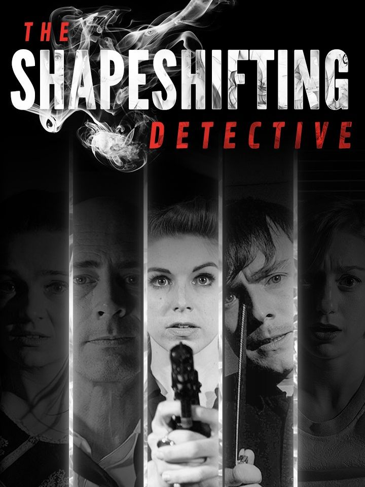

The Shapeshifting Detective
The Shapeshifting Detective
Details
|  | |
| Playtime | 4h 9m 0s |
| Last Activity | 2023-01-31 23:00:45 |
| Added | 2023-08-11 0:29:07 |
| Modified | 2025-10-02 9:34:47 |
| Completion Status | Completed |
| Library | Steam |
| Source | Steam |
| Platform | Macintosh PC (Windows) |
| Release Date | 2018-11-06 |
| Community Score | 70 |
| Critic Score | |
| User Score | |
| Genre | Adventure Indie Puzzle |
| Developer | D’Avekki Studios D'Avekki Studios |
| Publisher | CIRCLE Entertainment Wales Interactive |
| Feature | Single Player |
| Links | Official Website Steam Epic YouTube Twitch Playstation Nintendo |
| Tag | Adventure Choices Matter Detective FMV Horror Indie Mystery Nudity Sexual Content Singleplayer Story Rich |
Description
The Shapeshifting Detective is a supernatural-noir murder mystery FMV game where you play as a detective who can shapeshift into other characters, allowing you to unlock secret conversations and private encounters.
Dorota Shaw is dead. And the prime suspects are three tarot readers with the uncanny ability to predict murder - or commit it. It’s your job to find out what else they know - but they won’t reveal their dark secrets to just anyone… Luckily, you can be anyone you want to be. Even the next victim.
The game features more than 1600 full HD video responses, a simple questioning interface with unique ‘delete’ mechanic, and a randomly chosen murderer at the start of the game. Developed by the World Record-breaking makers of "The Infectious Madness of Doctor Dekker".
As you explore the town of August, you'll be treated to a streaming radio broadcast of specially selected dark fiction read out by some of our favourite content creators...
Jesse Cox
Tex Murphy (Chris Jones)
Adam Day (CallOfCthulhu)
Brandy Clarke (Brandykins)
Jessa (The Jessa Channel)
John Mark Clawson
Laceya Finley
The Raw Geek
Tim Leftwich
Venomous Platypus
Dorota Shaw is dead. And the prime suspects are three tarot readers with the uncanny ability to predict murder - or commit it. It’s your job to find out what else they know - but they won’t reveal their dark secrets to just anyone… Luckily, you can be anyone you want to be. Even the next victim.
The game features more than 1600 full HD video responses, a simple questioning interface with unique ‘delete’ mechanic, and a randomly chosen murderer at the start of the game. Developed by the World Record-breaking makers of "The Infectious Madness of Doctor Dekker".
As you explore the town of August, you'll be treated to a streaming radio broadcast of specially selected dark fiction read out by some of our favourite content creators...
Jesse Cox
Tex Murphy (Chris Jones)
Adam Day (CallOfCthulhu)
Brandy Clarke (Brandykins)
Jessa (The Jessa Channel)
John Mark Clawson
Laceya Finley
The Raw Geek
Tim Leftwich
Venomous Platypus